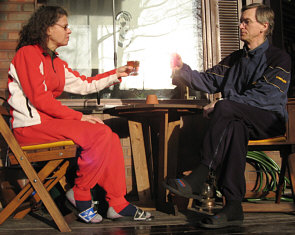

Ammuskelua naapurustossa
Maaliskuussa uutisoitiin televisiokanavilla ja kaikissa päivälehdissä ampumavälikohtauksesta, joka oli alkanut perheriidasta ja päättyi kotiinsa linnoittautuneen miehen pidättämiseen. Kukaan ei onneksi tapauhtumassa loukkaantunut vakavsti.
Muutenhan tässä uutisessa ei ollut mitään uutta, mutta tämä välikohtaus sattui tapahtumaan Heikinlaaksossa meidän kadullamme vain muutama sata metriä meiltä IKEAn suuntaan. Me olimme kuitenkin autuaan tietämättömiä tapahtuneesta. Aamupäivällä vein Samin jalkaisin luokkakaverinsa syntymäpäiville, emmekä tienneet mitään, että muutama tunti aikaisemmin pihamme edustalla oli pyörinyt poliisiautoja ja armejan panssari-Sisuja. Vasta naapurin rouva tiesi kertoa Mirjalle aamuisesta draamasta. TV-uutisista sitten ihmettelimme, minkälaista säpinää kotikadullamme, aivan postilaatikkojemme vieressä, oli aamun tunteina ollut.
Macintosh -

Päiväkirjasivuilla kerroinkin jo, että päätin Windowsiin "kyllästyneenä" siirtyä luovien ihmisten suosimaan Macintosh -maailmaan. Windows Vistan julkistuksen jälkeen on lehdissä ollut paljon juttuja Maceistä, koska moni varmasti miettii vaihtaako Vistaan vai siirtyisikö Maciin. Koneen vaihto kun joka tapauksessa olisi edessä.
Itse päädyin Maciin, vaikka en Vistaan ollutkaan vaihtamassa. Rupesi vain tympimään kaikkinainen virittely, siivoilu, päivitykset ja massiiviseksi paisuvat systeemit sekä käyttääjille tuputettavat palvelut ja ominaisuudet, joista oikeasti ei tarvitse kuin murto-osan. Ja tämä ei koske pelkästään Windowsia ja Microsoftia, vaan monia muitakin tämän päivän vehkeitä. Monen moista on tietysti Macissakin, mutta ne ovat ehkä paremmin piilossa ja poissa tavallista käyttäjää häiritsemästä.
Tietokone -lehden kolumnissa Antti Aromaa totesi käytettyään vuoden päivät Macia, että iän myötä halu virittelyyn on vähentynyt. Mutta hän ei sano tulleensa vanhaksi, vaan hän toteaa "Olen varmaan hankkinut elämän". Olen samaa mieltä. Koneet ovat käyttöä varten ja niiden tärkein ominaisuus on, että ne toimivat ja hoitavat perustehtävänsä luotettavasti, ilman että niitä tarvitse jatkuvasti viritellä.
Macissa on omat "omituisuutensa", joka lähinnä tarkoittaa sitä, että asiat toimivat vähän toisella tavalla kuin Windowsissa. Vaikka en vielä ole syvällisesti Macin mahdollisuuksiin ehtinyt perehtyä, niin sen tiedän, että tälle omenalle en ainkaan ole allerginen.
Samin juttuja
Nurkkatien ala-aste, jossa Sami käy koulua, oli viimesyksyisen konsulttiselvityksen perusteella yksi Helsingin alueen mahdollisesti lopetettavista kouluista. Nurkan puolesta kerättiin netti-adressia ja järjestettiin "Näpit irti Nurkasta" -lobbaustilaisuuksia. Lieneekö niiden ansiota tai painoivatko muut järkisyyt, että Nurkan koulua ei sitten lopeteta ainakaan nyt vuoteen 2010 kestävällä tarkastelujaksolla. Lopettaminen olisikin tuntunutkin hoopolta, koska Nurkan monitoimitalossa toteutuu harvinaisen hienosti koulun, iltapäivähoidon, kirjaston ja paikallisten liikunnan harrastajien yhteistoiminta. Kauan eläköön Nurkka.
Sami vietti synttäreitä tänä vuonna vain sukulaisten parissa. Isovanhemmat ja Wegut kävivät ensin ja sitten Isakssonit ja Pesoset. Sami sai lahjaksi "huojuva torni" nimisen pelin, jossa kootaan puupalikoista torni ja sitten vuorotellen yritetään poistaa siitä yksi palikka kerrallaan kaatamatta tornia. Pari kertaa sitä pelasimme, mutta sitten palikokille keksittiin uutta käyttöä. Sami rakenteli palikoista ja kynälaatikosta ja pyyhekumeista ja mecanon osista monimutkaisen "autojen pesupaikan", jonka konstruktio koostui suurimmalta osalta vilkkaasta mielikuvituksesta. Taitaa tosiaan pitää paikkansa, että poikalasten leikkikaluksi riittää metsästä löydetty keppi ja se muuntuu tarvittaessa aivan miksi tahansa.
Samilla on televisiossa useampiakin suosikkiohjelmia, mutta yksi ehdoton on nolojen tilanteiden mies Mr. Bean. Eikä nyt voi kieltää, etteikö se olisi iskänkin suosikki. Sami ei yleensä halua tai kinua mitään, mutta kun elokuvateattereihin tuli Mr. Beanin uusin leffa, niin Sami ilmaisi haluavansa päästä sitä katsomaan. Sitä kävimme sitten miehissä katsomassa (äiti ei ole Mr. Bean fani) Tikkurilan Bio Grandissa. Mr. Bean elokuvat ovat siitä hyviä, että ne perustuvat enemmän toimintaan kuin puheeseen, joten lapsenkin on niitä helppo seurata. Ainoa mikä jäi tympimään, oli ennen varsinaisen elokuvan alkua esitetyt tulevien (K-15) fantasialeffojen ennakkopätkät, joihin oli tietysti koottu kaikkein hurjimmat kohtaukset sekunnin mittaisten välähdyksien sarjaksi. Jotenkin tuli mieleen, että tämäkö on sitä "sisältöä", jota nuorisolle elokuvissa tarjotaan. No kotona sitten kilvan kerrottiin "äidin mieliksi", mitä kaikkea hauskaa ja hassua Mr. Bean oli tehnyt.
Kuukauden sää
Talvi kesti Ilmatieteen laitoksen mukaan 40 päivää. Maaliskuussa lämpotila nousi kaikkien aikojen ennätyslukemiin ollen parhaimmillaan jopa 17 astetta. Golf-kentät aukeilivat ja merellä bongattiin ensimmäiset purjeveneet.
Kuukauden ajatus
Onnellisuus on tunne, ei olosuhde. Onnellisuuteen vaikuttaa enemmän asenne kuin ympäristö.
Mari Aulanko: Johdan itseäni
Kuukauden kuva
I love Mac